3．射影几何与度量几何
彭赛列虽引进图形的射影和度量性质间的区别，并在他的1822年的书《论图形的射影性质》中说道，射影性质在逻辑上是更基本的，但开始在与长度和角的大小无关的基础之上建立射影几何的人却是冯·施陶特（第35章第3节）。在1853年法兰西学院教授拉盖尔（Edmond Laguerre，1834—1886）虽然起初关心的是研究射影变换下角度如何变化的情况，却以给予角的度量提供射影基础，实际上提出了根据射影概念来建立欧几里得几何度量性质的这一目标(6)。
求两已给相交直线之间夹角的度量，可考虑通过原点分别与此两已知直线平行的两直线。设过原点的直线方程（非齐次坐标）为
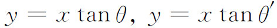
。设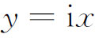
及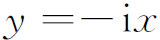
为过原点到无穷远圆点，即到（1，i，0）与（1，－i，0）两点的两直线（虚的）。令此四直线分别为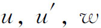
及w′。设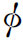
为u与u′间的夹角，则拉盖尔的结果为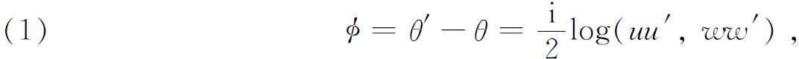
其中
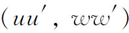
是四直线的交比(7)。（1）式的意义是它可以作为用交比这一射影概念来定义角的大小。对数函数自然是纯数量性的，故可在任何几何中引进。与拉盖尔无关，凯莱独立地迈进了第二步。他从代数观点研究几何。实际上他的兴趣在于代数形式（齐次多项式型）的几何解释。这是我们将在第39章内讨论的主题。为了要证明度量概念能够用射影语言来表达，他专心致力于欧几里得几何与射影几何的关系，我们要描述的工作是他的《关于代数形式的第6篇论文》（Sixth Memoir upon Quantics）(8)。
凯莱的工作实际是拉盖尔的思想的推广。后者用无穷远圆点定义平面角，虚圆点实际是退化的二次曲线。在二维时凯莱用任一二次曲线代替虚圆点，而在三维时他引进任何二次曲面。这些图形他称之为绝对形。凯莱断言图形所有的度量性质，无非就是加上了绝对形或者关于绝对形的射影性质。他于是证明这个原则怎样使我们能导出角的新表达式与两点间距离的表达式。
他从平面上点可用齐次坐标表示的事实出发，这些坐标不看作距离或者距离的比，而作为既定的基本概念，无需也不能给予任何解释。为定义距离与角度大小，他引入二次型
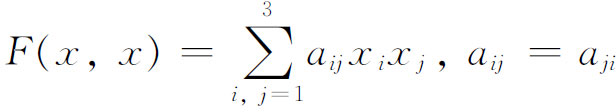
与双线性型
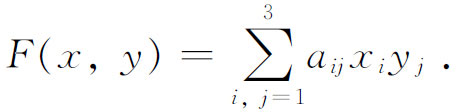
方程F（x，x）＝0定义一条二次曲线，即凯莱的绝对形。绝对形的线坐标方程为
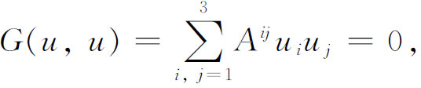
其中
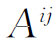
是F的系数行列式｜a｜中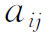
的余因子。凯莱用下列公式定义x与y两点间的距离δ，其中
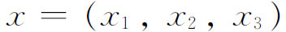
及y＝（y1，y2，y3）：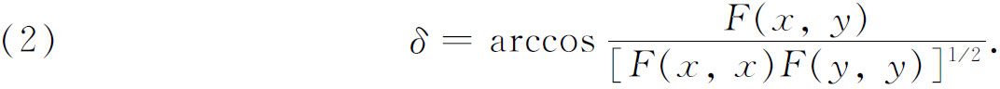
线坐标为
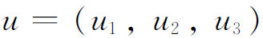
及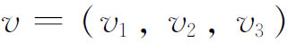
的两直线的夹角φ定义为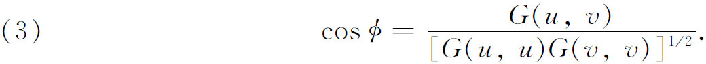
若取特殊二次曲线
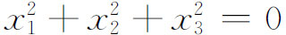
为绝对形，则上述两个一般公式就变得简单。这时，若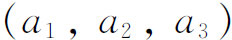
与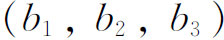
是两点的齐次坐标，则它们之间的距离由下式给出：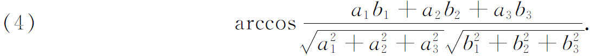
若两直线的齐次线坐标为
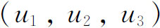
与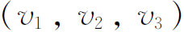
，则它们之间的夹角φ由下式给出：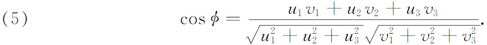
关于距离的表达式，若用简短写法
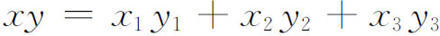
，并设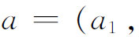
，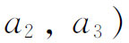
，b与c是直线上三点，则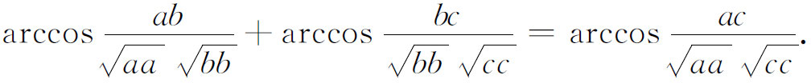
即距离的相加法则照样成立。取绝对形二次曲线为无穷远圆点（1，i，0）及（1，－i，0），凯莱证明距离与角度的公式将化成普通的欧几里得公式。
读者注意，长度和角度的表达式里包含绝对形的代数表达式。一般地，任一欧几里得度量性质的解析表达式包含着该性质与绝对形的关系式。度量性质不是图形本身的性质，而是图形相关于绝对形的性质。这是凯莱以一般射影关系来决定度量的思想。射影几何中度量概念的地位和前者更大的普遍性，用凯莱的话来说：“度量几何是射影几何的一部分。”
凯莱的思想为克莱因（1849—1925）所采纳，并将它推广到包括非欧几里得几何。克莱因是格丁根的教授，是19世纪后期到20世纪初期第一流德国数学家之一。在1869年至1870年间他学习了罗巴切夫斯基、约翰·波尔约、冯·施陶特和凯莱的研究工作；然而即使在1871年他还不知道拉盖尔的结果。他觉得利用凯莱的思想有可能把非欧几里得几何、双曲几何与二重椭圆几何都包括在射影几何里面。他在1871年(9)的一篇论文中概略叙述了他的思想，并发展成为两篇文章(10)。克莱因是第一个认识到无需用曲面来获得非欧几里得几何的模型的人。
克莱因首先指出凯莱没有说清楚他心目中的坐标究竟有什么意义。它们或者是没有几何解释的变量，或者是欧几里得几何的距离。但要从射影几何中推导出度量几何，必须在射影基础上建立坐标。冯·施陶特曾证明（第35章第3节）用他的投射代数（algebra of throws）可能给点规定以数。但他用了欧几里得平行公理。看来克莱因清楚地认识到这个公理能够去掉，并在1873年的论文中证明了这是能做到的。于是四个点的、四条直线的或者四个平面的坐标和交比，都可以在纯粹射影的基础上定义。
克莱因的主要思想是把凯莱绝对形二次曲面（若考虑三维几何）的性质具体化，就能证明依赖于绝对形性质的凯莱度量将产生双曲几何与二重椭圆几何。当二次曲面是实椭球面或实椭球抛物面，或实双叶双曲面时，便得到罗巴切夫斯基的度量几何；而当二次曲面是虚的时，便得到黎曼非欧几里得几何（正的常曲率）。如果绝对形是球面虚圆，其齐次坐标方程为
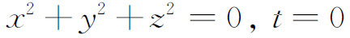
，则得出普通的欧几里得度量几何。于是度量几何成为射影几何的特例。我们用二维几何来领悟克莱因的思想。在射影平面内选取一个二次曲线；此二次曲线将为绝对形。其点坐标方程为
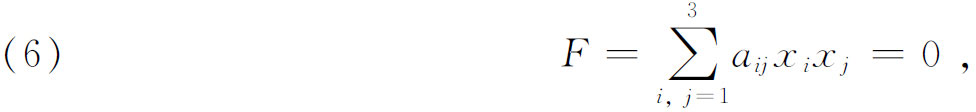
其线坐标方程为
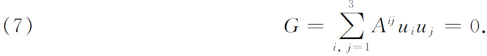
要推导罗巴切夫斯基几何，二次曲线必须是实的，即其平面齐次坐标方程为
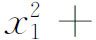
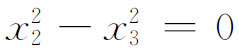
；对正的常曲率曲面上的黎曼几何来说，二次曲线是虚的，例如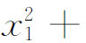
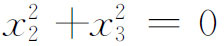
；对欧几里得几何，二次曲线退化成两根重合直线，齐次坐标用x3＝0表示，并在此轨迹上选取两个虚点，其方程为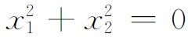
，即无穷远圆点，它的齐次坐标为（1，i，0）及（1，－i，0）。在各种情况下二次曲线都是实方程。为了说得具体起见，设二次曲线如图38.2所示。若P1与P2为一直线的两点，此直线与绝对形相遇于两点（实的或虚的）。则距离取作
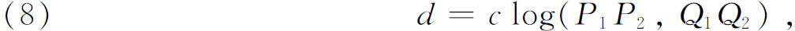
括号中的量表示四个点的交比，c是一常量。此交比可用点的坐标表示。再者，若有三点P1，P2，P3在此直线上，立即可以证明
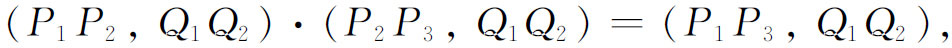
故得
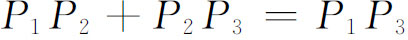
。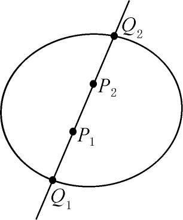
图38.2
同样，若u及v是两直线（图38.3），考虑过此两直线交点到绝对形的切线t与w（切线可以是虚线），则u及v的夹角定义为
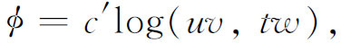
其中c′是常量，括号中的量表示四直线的交比。
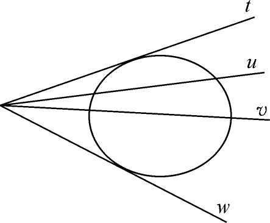
图38.3
为解析地给出d和φ值的表达式，并证明它们与绝对形的选取有关，设绝对形的方程为如上所给的F与G。由定义
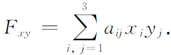
现能证明：若
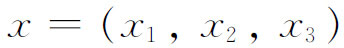
与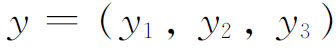
为P1与P2的坐标，则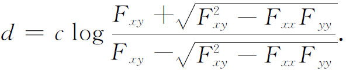
同样，若
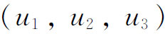
与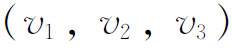
为两直线的坐标，则用G能证明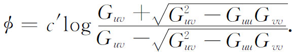
常量c′一般取为i/2，使得φ是实的，且全中心角是2π。
克莱因应用角与距离的上述对数表达式，并证明如何能从射影几何导出度量几何来。于是若从射影几何开始，则选取绝对形并应用以上距离与角的表达式，便能得到欧几里得的、双曲的和椭圆的几何作为其特例。度量几何的性质则由绝对形的选择而固定。附带地说一下，克莱因的距离和角度表达式能够证明等于凯莱的表达式。
若作射影平面到它本身的射影变换（即线性变换），它把绝对形变到本身（虽然绝对形的点变到其他点），则因为在线性变换下交比是不变的，距离和角度将不改变。使绝对形不变的那些线性变换就是由绝对形所确定的特殊度量几何的刚体运动或者全等变换。一般的射影变换不能使绝对形不变。于是射影几何本身在它所允许的变换中是更为一般的。
克莱因对非欧几里得几何的另一项贡献是这样的研究结果，即他观察到有两种椭圆几何，据他说这结果于1871年(11)第一次得到，但发表于1874年(12)。在二重椭圆几何中，两个点并不总是确定唯一的直线。在球面模型中当两个点在直径相对两端时这是很明显的。第二种椭圆几何称为单重椭圆几何，在这种几何中两个点永远确定唯一的一条直线。从微分几何观点来看，正的常曲率曲面上微分型ds2（用齐坐标）是
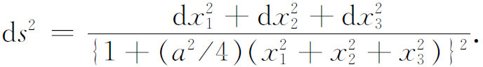
在两种情况下都是a2＞0。然而，在第一类中测地线是有限长度2π/a的曲线，若半径为R，则此有限长度为2πR，并且是封闭的（回到它们自己）。在第二种类型中，测地线长为π/a或πR，并且仍然是封闭的。
有单重椭圆几何性质的一个曲面模型是克莱因提出的(13)，这是个半球面，包括其边界。然而，边界上直径相对两端的任两点必须看作是一个点。在半球面上的大圆弧是“直线”或是这个几何的测地线，曲面上的普通角是这种几何的角。于是单重椭圆几何（有时称为椭圆几何，那时二重椭圆几何称为球面的几何）也可在正的常曲率空间实现。在这个模型中，至少在三维空间内我们不能把视为等同的这样两点实际连成一点。这种曲面将自交，并且曲面上重合于自交交点处的点将看作是不同的点。
现在我们能看出为什么克莱因把罗巴切夫斯基几何称作是双曲的，把正的常曲率曲面上的黎曼几何称作是椭圆的，把欧几里得几何称作是抛物的。这种名称来自下述事实：即普通双曲线与无穷远直线相交于两点，而相对应地在双曲几何中每一条直线交绝对形于两个实点。普通椭圆与无穷远直线没有实的公共点，同样在椭圆几何中每条直线与绝对形没有实的公共点。普通抛物线与无穷远直线只有一个实公共点，而在欧几里得几何中（作为射影几何中的一种几何），每条直线与绝对形只有一个实的公共点。
从克莱因的研究工作中逐渐出现的意义就是，射影几何在逻辑上实在是独立于欧几里得几何的。再者，非欧几里得和欧几里得几何也可看作射影几何的特例或子几何。确实，射影几何公理化基础的纯逻辑的或严密的研究工作以及其与子几何的关系还有待后人去做（第42章）。但弄清楚了射影几何的基本地位之后，克莱因便铺平了公理化发展的道路，这就能从射影几何出发并由它推出几种度量几何。